Experiences &
Certificates
Co-op Student
Advanced technology Department (Since January 2026)
Business Intelligence system Infrastructure
Algonquin College, Ottawa, ON, Canada
Through my specialized training in Business Intelligence System Infrastructure at Algonquin College, I strengthened my abilities in data modelling, database systems, cloud technologies, and modern analytics tools, gaining hands‑on experience with Power BI, Tableau, MySQL, Python, AWS, Machine Learning and end‑to‑end data integration processes that support effective business reporting and decision‑making.
Lecturer and Researcher
College of Science (09/2018- 07/2023)
Department of Statistics
Bahir Dar University, Ethiopia
At Bahir Dar University, I delivered skill based undergraduate and graduate lectures in core statistical disciplines such as Regression Analysis, Probability Theory, and Statistical Computing, while contributing to institutional development through active service on curriculum design and graduate admissions committees. I provided advanced training to postgraduate cohorts to strengthen their programming, analytical, and research competencies, and I maintained a strong scholarly presence by publishing peer‑reviewed research in reputable scientific indexed journals.
Lecturer
College of Natural and computational Science (09/2013 – 08/2018)
Department of Statistics
Adigrat University, Ethiopia
At Adigrat University, I lectured and supported undergraduate courses such as Introduction to Statistics and Applied Regression, while designing quizzes, homework, and lab assignments using R and Python to strengthen students’ computational skills. I provided weekly office hours and tutorial sessions for approximately 100 students each semester, offering individualized academic support, and I evaluated midterms and final examinations with detailed, constructive feedback to enhance student understanding and performance.
Seminar and Paper Presentations
Research Project and Community Service
software Applicaton
Statistical Software Packages
- SPSS
- SAS
- R
- STATA
Data Science and BI Tools
- PowerBI
- Tableau
- MySQL
- Python
My Quote
Developed analytical talent through applied training in modern tools for data‑driven insights.
Certificates
Research Paper Presentation, Deliver software training and Particepation in committees
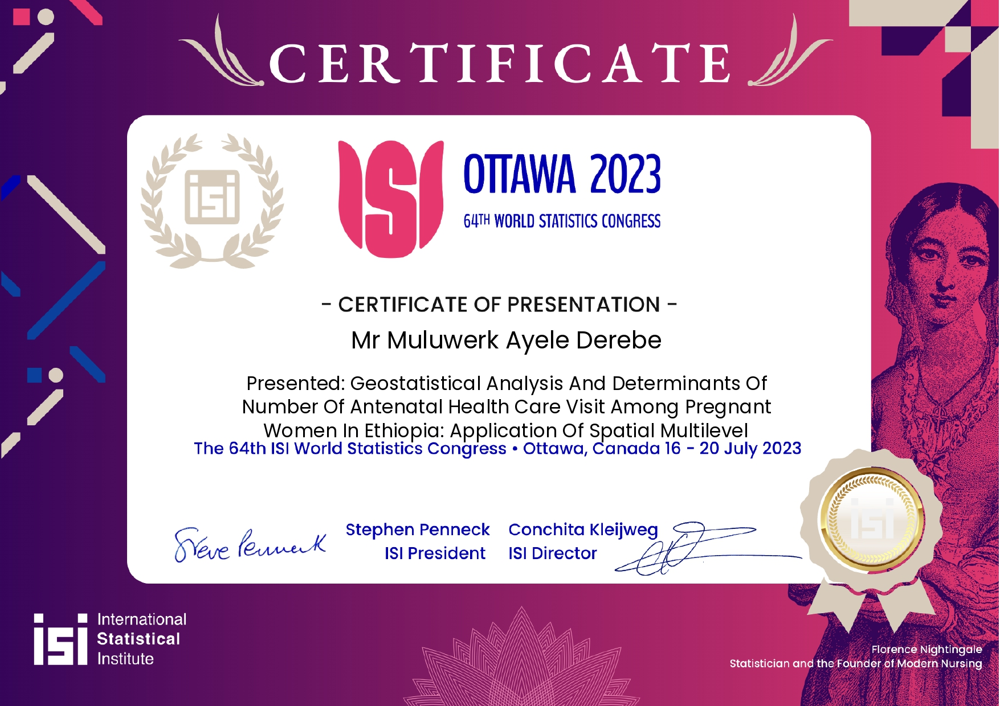
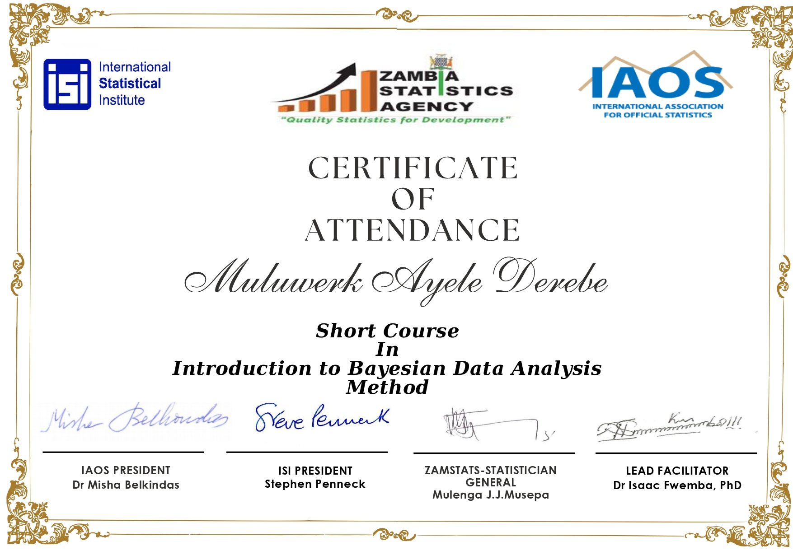
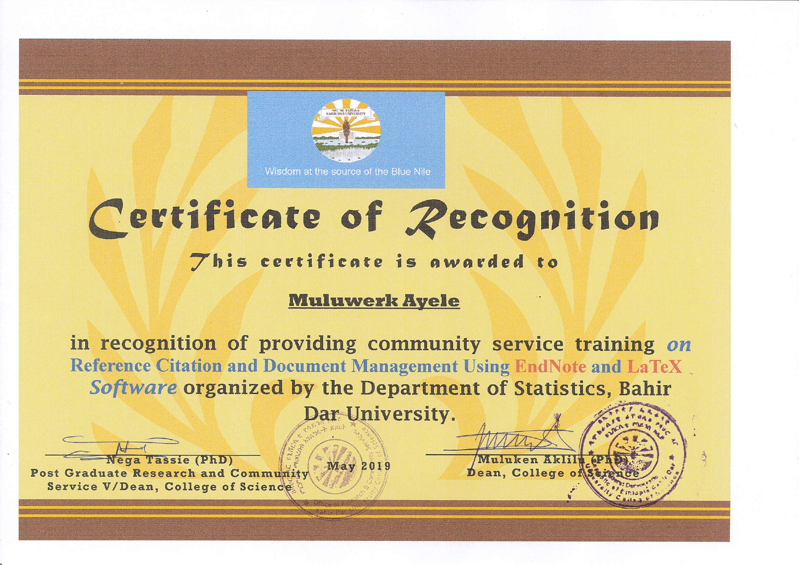
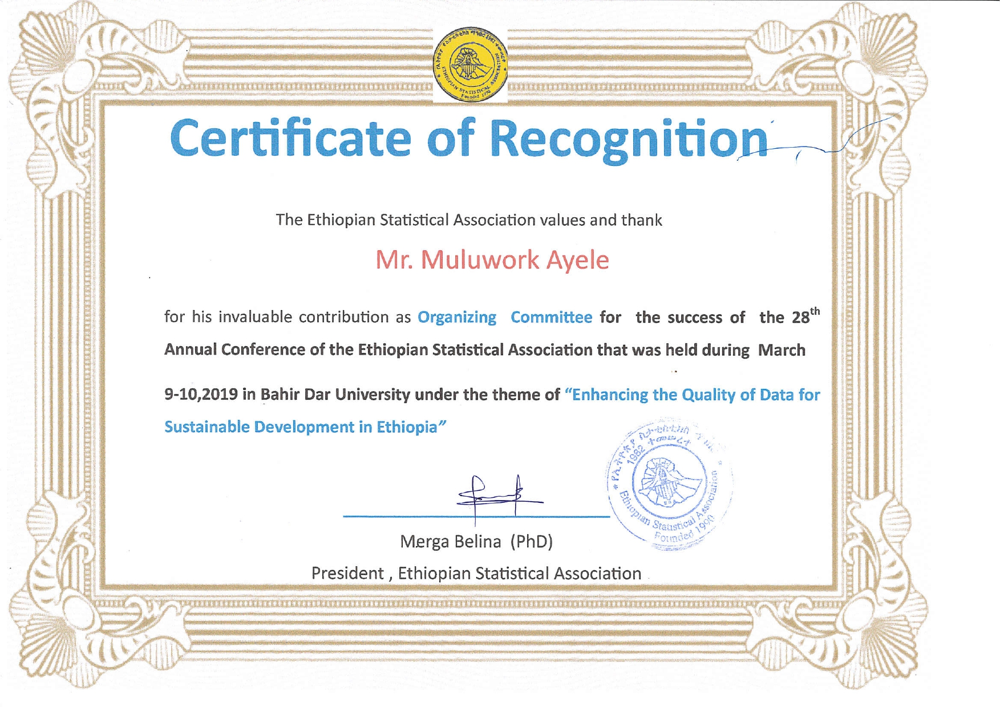
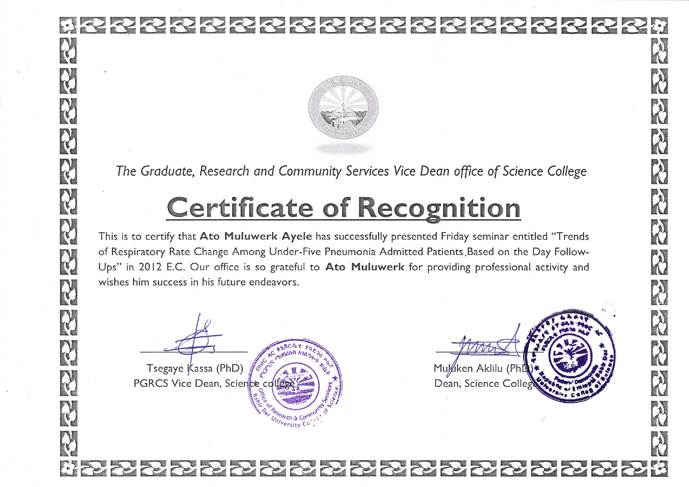
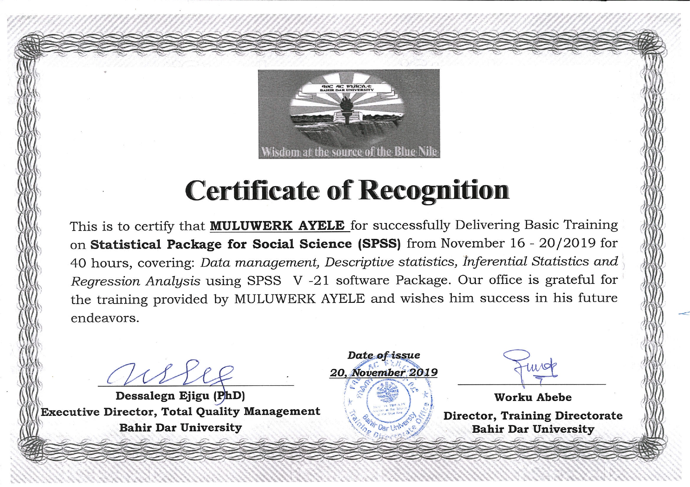
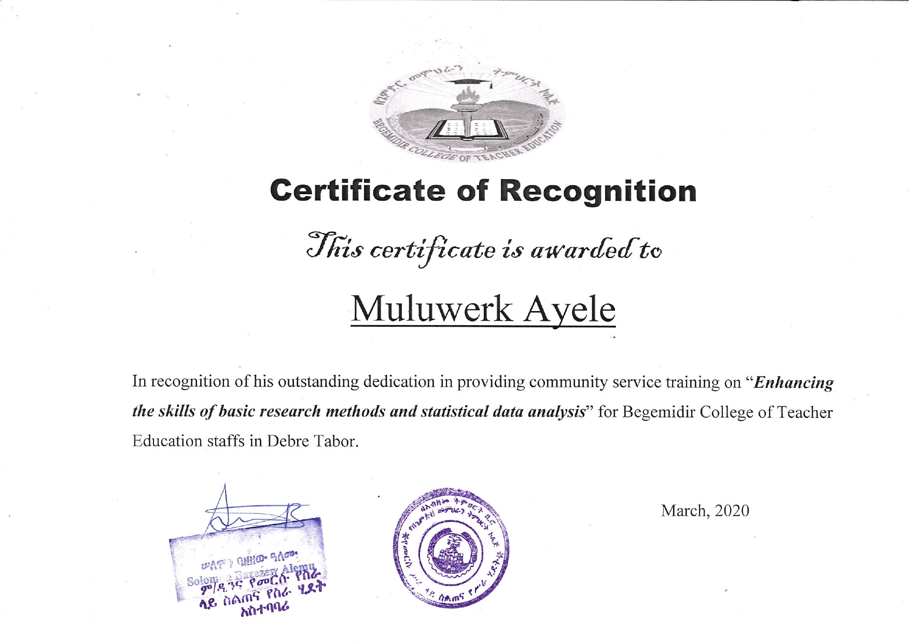
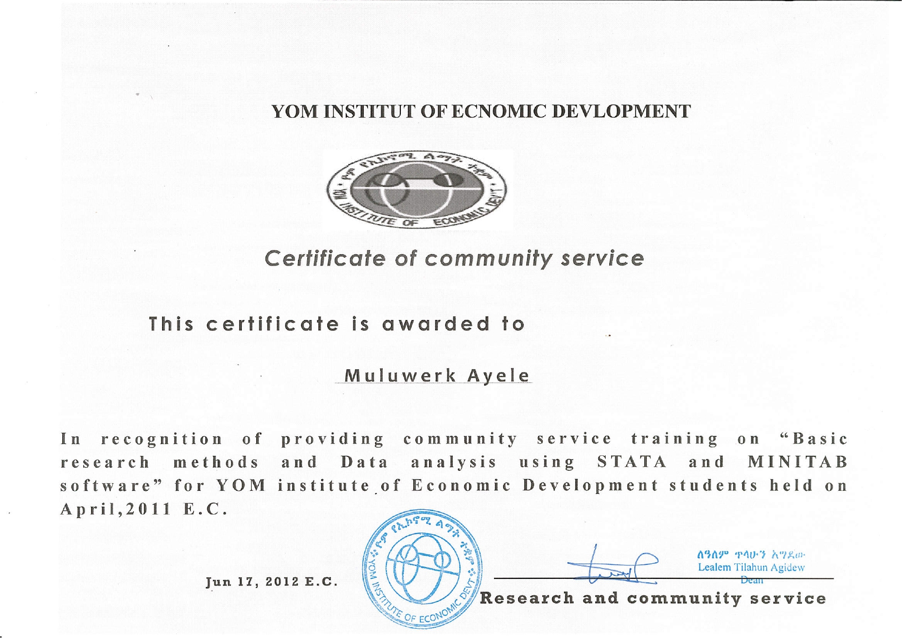
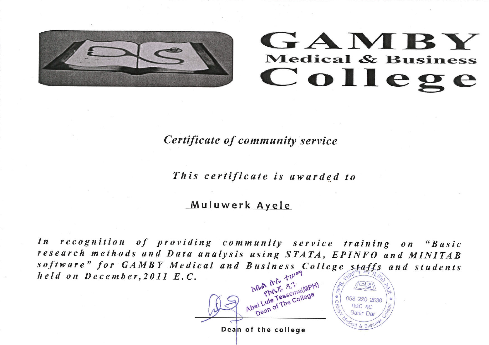
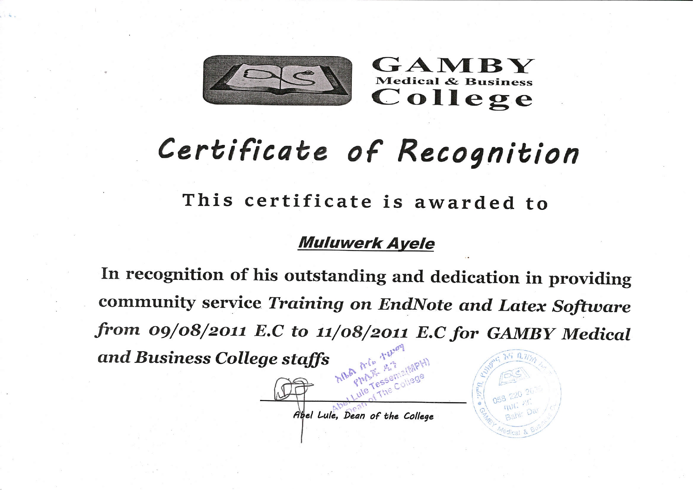
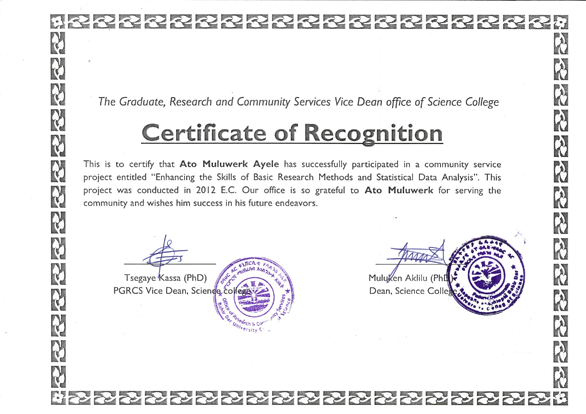
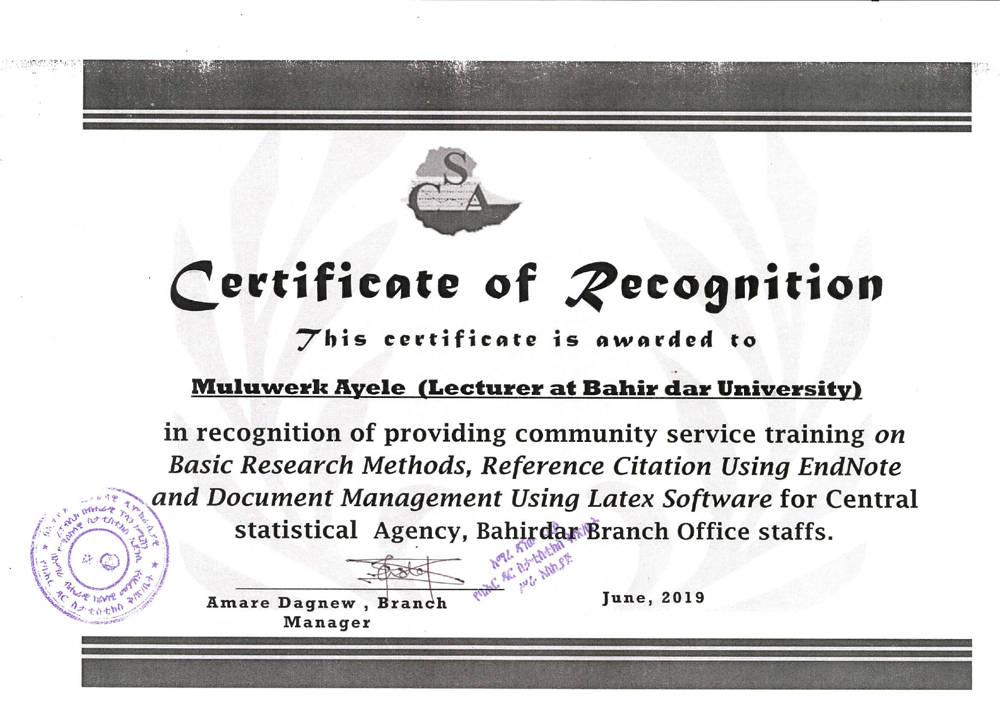
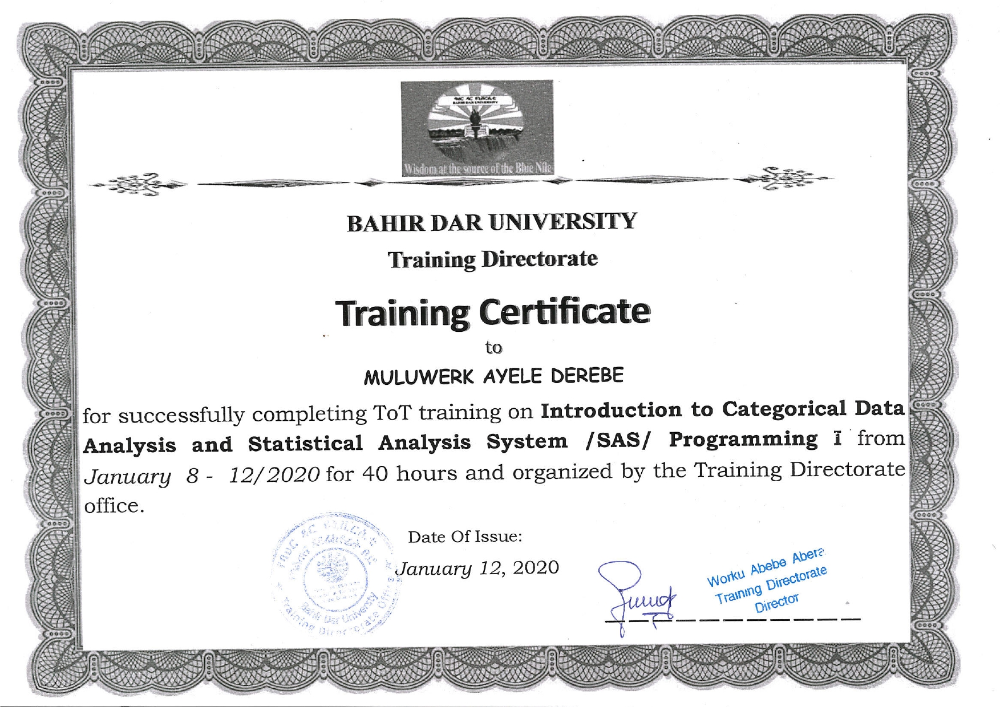
Left & Right
I actively contributed to community service through my roles in organizing major academic and professional events, including annual science conferences and national statistical gatherings. My involvement supported successful program coordination, youth engagement, and conference logistics, reflecting my commitment to advancing scientific dialogue and strengthening professional communities.
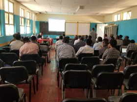
Thank You!!
Thank you for taking the time to review my portfolio. I appreciate your consideration and look forward to the opportunity to contribute my skills to your team.
- © Untitled
- Design: HTML5 UP